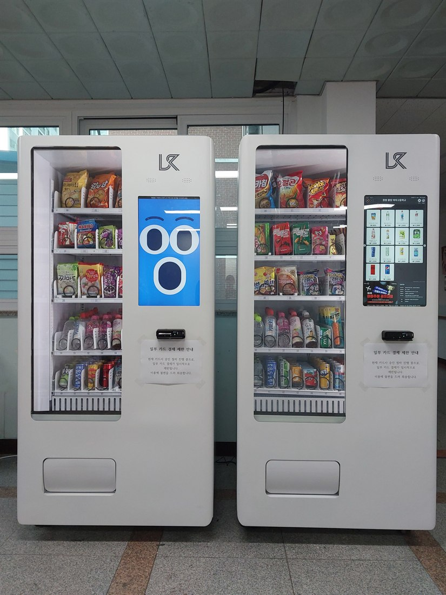

대학교 무인자판기 사업 시작하는 법 — 설치·자리·수익구조 완전정리

대학교 캠퍼스는 무인자판기 사업을 시작하기 좋은 대표적인 자리입니다. 수천 명의 학생·교직원이 오가고, 학기 중에는 유동이 안정적으로 유지되기 때문입니다. 그래서 대학교 자판기 사업·캠퍼스 자판기 창업을 알아보는 사장님이 늘고 있습니다. 다만 "설치만 하면 된다"가 아니라, 자리 확보·수익 구조·운영 방식을 알고 시작해야 실패가 적습니다. 이 글은 그 실무를 정리한 것입니다.
1. 대학교 자판기 사업, 핵심은 '자리'
대학교 자판기는 아무나 아무 데나 놓을 수 없습니다. 대부분 학교(총무과·시설과)의 설치 승인이나 입찰·제안을 거칩니다. 학생회관·생활협동조합(생협)이 관리하는 곳도 있습니다. 그래서 사업의 출발점은 어느 대학, 어느 건물에 자리를 확보하느냐입니다. 학교에 따라 자릿세(임대료)나 수수료 조건이 붙기도 하니, 계약 조건을 먼저 확인하세요.
2. 몇 대로 시작하고, 어떻게 늘리나
보통 잘 되는 건물 한두 대로 시작해 반응을 보고 늘립니다. 캠퍼스는 강의동·도서관·기숙사·학생회관·체육관처럼 건물이 여러 개라, 한 대학에서 여러 대를 분산 배치하면 한 곳에서 여러 대 매출이 나옵니다. 야간에 사람이 있는 기숙사·도서관은 24시간 매출이 나와 특히 좋습니다.

3. 수익 구조 — 이렇게 남습니다
대학교 자판기 사업의 수익은 매출 − 상품 원가 − 자릿세 − 관리비 = 순이익 구조입니다. 인건비가 들지 않아 고정비가 낮고, 카드·간편결제라 현금 관리도 필요 없습니다. 다만 방학에는 매출이 크게 줄어드니(성수기·비수기), 학기 중 재고를 두껍게 잡고 방학엔 품목을 줄이는 운영이 필요합니다. 상품을 싸게 매입할수록 마진이 커집니다.
4. 직접운영 vs 위탁운영
• 직접운영 — 상품 매입·보충·정산을 직접 합니다. 마진이 크지만 손이 많이 갑니다.
• 위탁운영 — 운영사가 재고·보충을 맡고 사장님은 자리와 매출을 관리합니다. 여러 대·여러 캠퍼스를 굴릴 때 편합니다.
둘 다 원격으로 재고·매출을 확인하는 시스템이 있으면 관리가 훨씬 수월합니다.

5. 시작 전에 준비할 것
사업자등록(자판기 운영업)과 카드 가맹이 기본입니다. 무실적(신규)·영세가맹점도 가맹이 되고, 상품 매입처(도매·유통)도 함께 정합니다. 학교와의 설치 계약·자릿세·계약기간, 전기·통신 환경까지 확인해야 합니다. 처음이면 부업·투잡으로 소규모로 시작해 늘리는 분이 많습니다.
6. 사장님, 이렇게 알아보세요 (체크리스트)
① 설치업체가 학교 설치 협의·서류를 도와주는지
② 설치비·기기 비용(구입·렌탈·임대)
③ 카드·삼성페이·QR 결제 지원
④ 재고·매출 원격 관리 시스템
⑤ 냉장·냉동 옵션, 품목 컨설팅
⑥ 빠른 A/S(캠퍼스는 자주 못 가니 중요)
7. 대학교 자판기 사업, 이렇게 시작하세요
H포스는 설치비 무료로 대학교·기숙사·도서관에 맞춰 스마트 자판기를 구성하고, 학교 설치 협의부터 결제 가맹, 원격 재고·매출 관리, 냉장·냉동 옵션까지 함께 잡아 드립니다. 직접운영·위탁운영, 임대·구매 중 수익에 맞는 방식도 상담해 드립니다. 어느 대학·건물에 몇 대를 두려는지만 알려주시면 예상 품목과 수익 구조까지 무료로 안내합니다.
📞 대학교 무인자판기 사업 상담 010-6832-1994